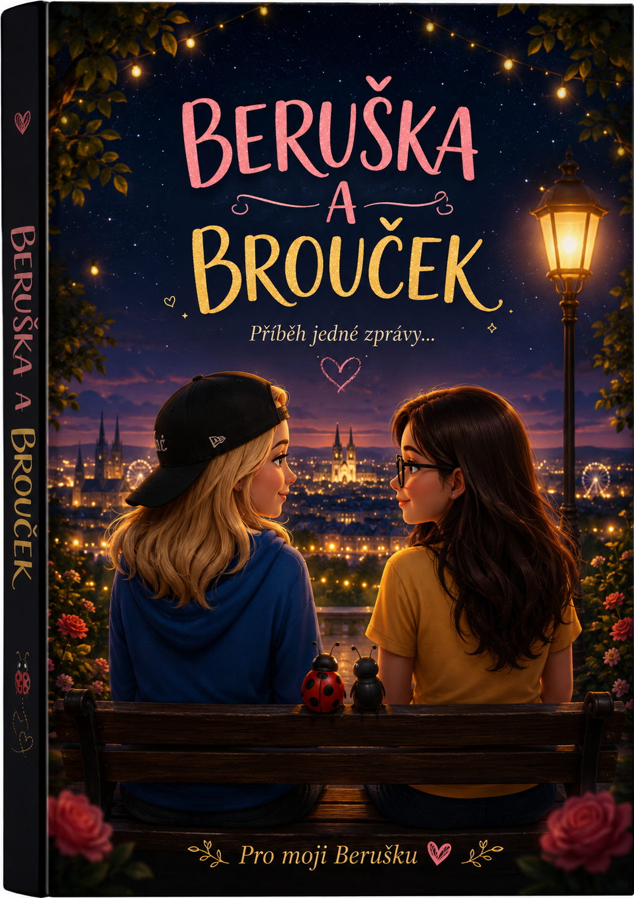
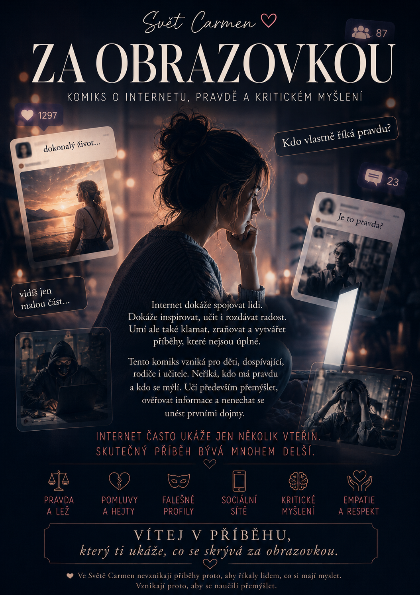
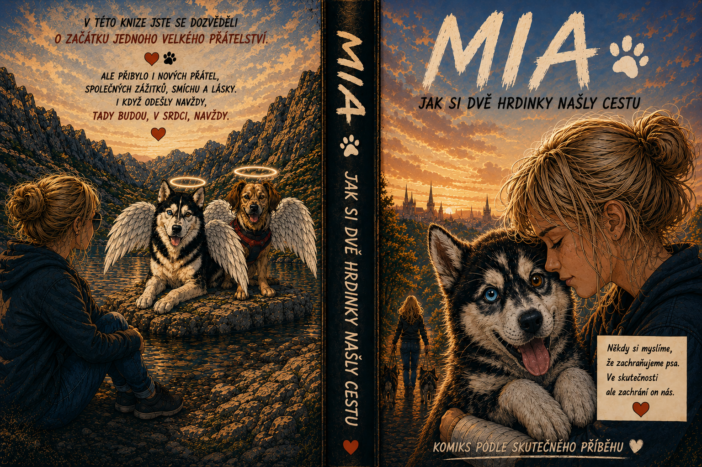

📖 Vydáno
🐞 Beruška a Brouček
Příběh jedné zprávy, která změnila dva životy. Komiks o skutečném přátelství, podpoře a okamžicích, které zůstávají v srdci.
Přečíst komiks
Vyber si příběh, který tě osloví.
Každý z nich vzniká srdcem.
Každý příběh ve Světě Carmen vzniká z opravdových emocí, přátelství, odvahy a naděje. Vyber si, kterým chceš začít.

Příběh jedné zprávy, která změnila dva životy. Komiks o skutečném přátelství, podpoře a okamžicích, které zůstávají v srdci.
Přečíst komiks
Série příběhů inspirovaných skutečnými událostmi ze sociálních sítí. Internet může spojovat i ubližovat a skutečný příběh bývá často mnohem delší, než se na první pohled zdá.
Vstoupit do příběhů
Příběh jedné sibiřské husky, která změnila život celé rodině. Komiks o přátelství, věrnosti, radosti i okamžicích, na které se nezapomíná.
Již brzy